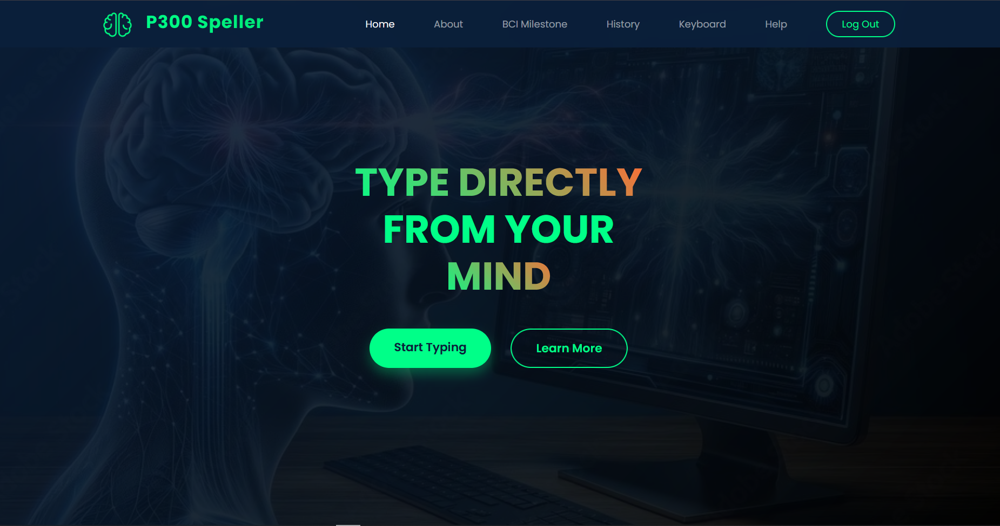
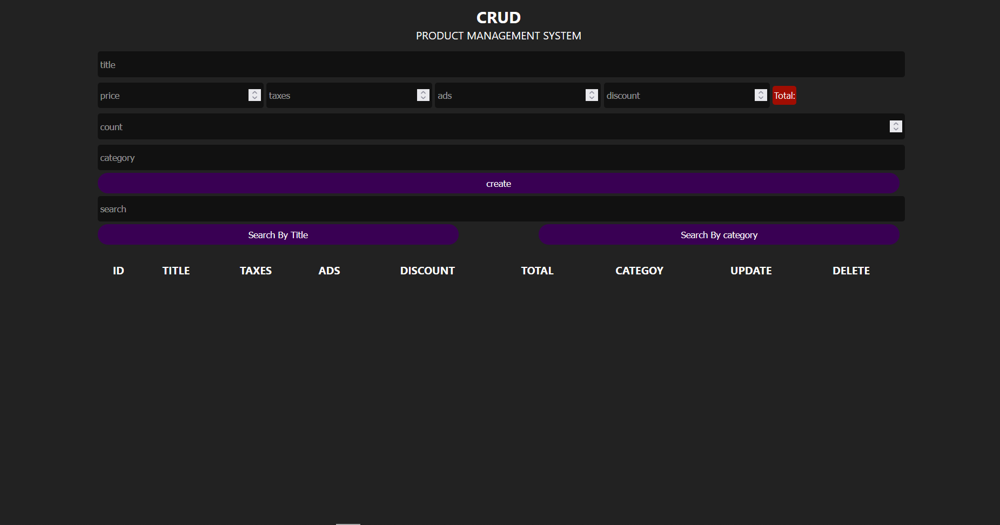
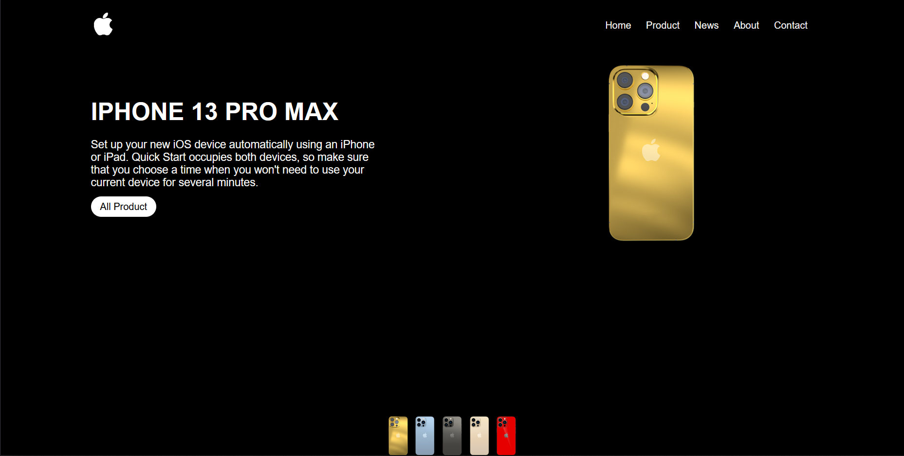
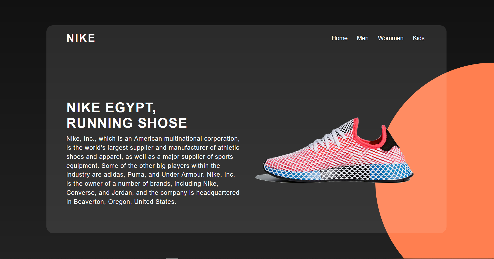

// portfolio
Featured Projects
A selection of projects across frontend, backend, and research.

Graduation Project · Research
Brain-Computer Interface (BCI/P300)
Frontend for a BCI system using P300 signals to control user interaction. Responsible for responsive UI and real-time brain signal display.
View Project
Frontend · JavaScript
CRUD Task Manager
A multi-page task management app built with vanilla JavaScript — covers full create, read, update, and delete operations with local persistence.
View Project
Frontend · Animation
Fitness Landing Page
Animated fitness landing page with interactive sections, CSS transitions, and a performance-focused responsive layout.
View Project
Frontend · Web Design
iPhone Product Page Clone
Pixel-accurate product page clone showcasing advanced CSS layout, grid design, and responsive techniques.
View Project
Frontend · HTML & CSS
Nike Landing Page
A clean, brand-aligned Nike marketing page with custom typography, hero sections, and animated product highlights.
View Project